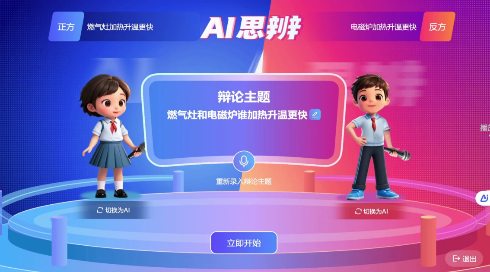

正方
AI
AI 激进派AI
已发言 · 引用《塑料污染白皮书》
但是塑料袋带来的环境污染成本远远超过替代品的经济成本。根据《塑料污染白皮书》的数据，每年全球生产 5 兆个塑料袋，其中只有不到 9% 被回收处理。
VS
反方
生
学生学生
正在发言 · 倒计时 38s
请继续发言...
发言历史
10:01
反方
完全禁止不太现实，替代品成本太高，会加重普通家庭的生活负担。
10:03
正方
环境污染成本远超替代品的经济成本，应该分阶段限塑。
10:06
正方
日本和欧盟已经实施了部分塑料禁令，国民生活并未受到明显影响。
显示更多 · 共 8 条